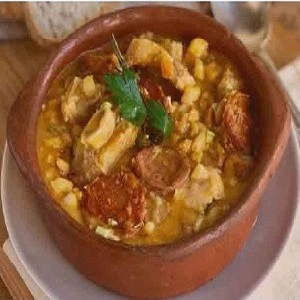
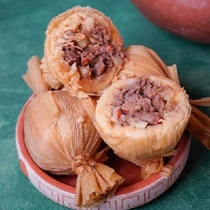

¡Un lugar donde podrás degustar nuestras exquisitas comidas regionales, conocer estas recetas y su
preparación
y, mediante otros enlaces te llevarán a visitar lugares maravillosos!.
Somos la combinación perfecta entre una gran diversidad de productos y la identidad culinaria de
nuestros ancestros: los sabores son saberes, ritos y cultura viviente.
Somos la combinación perfecta para que escuches la música andina de nuestros ancestros y nuestros artistas
actuales, tanto como los sonidos del acordeón, del charango, del erke, de la zamponia, de la quena, para que
te
transportes a un lugar de ensueño dando rienda suelta a la alegría del carnaval.
Te invitamos a degustar los productos vertidos en estas recetas: El locro, la humita, los tamales, el dulce de
cayote, las empanadillas, el queso y el quesillo. También podrás de degustar las riquísimas empanadas, las
sopas, los picantes de mote, los picantes de pollo, la calapurca, la tijtincha, el mote con chicharrón, los
alfajores de miel de caña, el charqui, el anchi, la mazamorra, el chilcán con queso, las papas, la oca, el
yacón, la quinoa.
No te prives de coquear y sentirte un jujeño más. Tomá un sorbo de nuestros tés de rica rica, de muña muña, de
borraja, de yareta, de manzanilla, de cedrón y los mates de salvia. Probá el arrope de maíz, de tuna y de chañar, las
tortillas
de parrilla, el pan casero o bollo, la cabeza de vaca guateada en horno de barro acompañando con bueeen vino.
Te invitamos a visitar nuestra Puna, nuestra zona de la Quebrada, nuestros Valles y nuestra zona de las
Yungas,
nuestra diversidad geográfica en una sola provincia, Jujuy.
Te invitamos a correr los 28 km desde Tumbaya hasta Purmamarca, y en las Salinas Grandes, en las Serranías de
Zapla, en San Antonio; en fin, Jujuy es energía viva, energizate en Jujuy. Qué esperás para visitarnos!.
En las fotos, de izquierda a derecha y de arriba hacia abajo: Iglesia Nuestra Señora de los Dolores de Tumbaya, construida en 1796 y denominada Monumento Histórico Nacional. A la derecha está el Monumento a los Héroes de la Independencia, en Humahuaca, inagurado en 1950; luego la vista de la entrada al pueblo de Purmamarca y los Cerros de los Siete Colores. Una hermosa vista de los cardones en flor. Las dos últimas son vistas panorámicas hacia San Bernardo, la primera tomada desde una altura de 3500 msnm, y la segunda foto se divisa El Angosto - San Bernardo.
Las distintas recetas regionales, pero todas riquísimas. Date el tiempo de cocinarlas.

Locro
Humitas

Tamales
Dulce de Cayote
Empanadillas
Queso Regional
Cayote
Quesillo
Choclo
Locro
El locro en Argentina es un plato tradicional para las fiestas patrias, sea para el 25 de mayo y el 9 de
julio, o para el 1º de mayo; por supuesto que también se prepara para alguna fiesta patronal o regional, o
para cualquier otra ocasión; y en época de invierno.
Ingredientes para 10 personas:
1 kgr de falda.
500 grs de patitas de cerdo.
200 grs de chorizo.
150 grs de panceta.
3 chorizos colorado.
2 chorizos.
300 grs de de tripa gorda.
300 g de maíz blanco partido.
300 g de porotos alubia.
1 kgr de zapallo plomo.
200 grs de puerro.
200 grs de cebolla de verdeo.
1 cucharada de pimentón.
1 cucharada de comino.
Ají picante.
Sal.
Tiempo de cocción: Aproximadamente entre 2 ½ y 3 horas.
Preparación:
Poner en agua el maiz partido y el poroto 12 horas antes de comenzar a cocinar.
Rallar el zapallo plomo.
Cortar la falda en trozos.
Las patitas de cerdo ya vienen trozadas por el carnicero amigo.
Cortar la panceta en cubos.
Cortar el chorizo colorado y la tripa gorda en rodajas.
Picar el puerro y la cebolla de verdeo.
Preparar en un recipiente caldo de verduras para ir agregando a la olla conforme disminuya su contenido
líquido, éste caldo deberá estar hervido. Siempre que agreges, ya sea caldo o agua, deben estar hervidos.
Poner en una olla lo suficientemente amplia el maiz partido, el poroto, sal a gusto, agregar agua y poner a
hervir por 1 ½ hora, revolver cada tanto para que no se pegue. Después de este tiempo agregar la falda, la
panceta, las patitas de cerdo, el chorizo colorado, la tripa gorda, los chorizos enteros (después de ½ hora
sacarlos y cortarlos en rodajas y poner de nuevo a la olla), el zapallo rallado, el puerro, el pimentón, el
comino y el ají picante. Agregar
suficiente caldo y dejar hervir, de tanto en tanto mezclar.
Transcurrido el tiempo de cocción servir y poner la salsa picante y la cebolla de verdeo. Acompañar con un
buen vino tinto. Qué lo disfrutes!!!.
Prepración de la salsa picante:
Saltear una cebolla picada en cubos pequeños en un recipiente con aceite hasta que esté dorada, luego agregar
2 tomates picados, 3 ajíes picantes, dos cucharaditas de pimentón, 20 grs de albahaca picada; agregar 1 taza de
agua.
Cocinar por 15 minutos.
Terminada su cocción agregarles ½ taza de agua fría hervida, esto hace que el
aceite salga a la superficie dando el típico sabor y aspecto de la gastronomía regional.
Humitas
Ingredientes para una docena.
24 choclos.
1/2 kg cebolla.
2 morrones rojo.
Cebollita de verdeo a gusto.
Pimentón.
Aceite y sal a gusto.
1 kg queso de cabra o queso de máquina.
Preparación de la Receta:
Comenzamos cortando con un cuchillo la base del choclo dejando 1 cm, esto hace que las chalas queden cortadas en
forma pareja para seleccionarlas para el armado de la humita, por experiencia seleccionamos las de mayor ancho así
nos quedarán para un moldeado cómodo al momento de hacerlo. Quitamos las chalas por una parte y el choclo por
otra, sacando las barbas del mismo para llevarlas a un recipiente en agua con unas gotas de lavandina. Enjuagamos
bien el choclo y las chalas.
En un sartén con aceite cocinamos cebollas y morrones cortados en cubos pequeños por unos minutos.
Rallamos los choclos en un recipiente. Luego le agregamos las cebollas y los morrones cocinados, un poquito de ají
picado, sal y pimienta a gusto.
Para la salsa picante, cortamos la cebolla de verdeo en rodajas finas y picamos 1 ají.
En una cacerola, volcamos 1/2 taza de aceite de oliva y salteamos las cebollas junto con el ají. Debemos cuidar
que no se quemen y que tomen un poco de color. Condimentamos con sal, pimienta y ají molido. Reservamos.
Para ir ganando tiempo colocamos a hervir agua en una cacerola con los marlos del choclo rallado, esto se hace
para que el agua quede savorizada.
Y Ahora nos toca armar las humitas. Esto lo hacemos colocando las chalas seleccionadas en forma de cruz, luego,
ponemos una buena y generosa cucharada del relleno en el medio, agregamos el queso de cabra o algún queso cremoso
cortado en forma de cubos, dos tres cubitos por cada unidad de humitad. Cerramos con la chala en forma prolija. Si
la la mezcla está un poco líquida, no nos deja armar la humita, la recomendación es que quitemos algo del jugo de
la mezcla y lo separemos en un recipiente para, después, preparar una rica sopa. Atamos con tiritas de la misma
chala. La forma de preparar estas tiritas es cortar chalas finas de 2 cm de ancho y atarlas bien en su parte más
fina.
Una vez que todos los paquetes están armados, retiramos los marlos de la cacerola, y ponemos las humitas a
cocinar, agregamos agua hervida si es que hiciere falta. Cocinamos durante 30 a 40 minutos.
Servimos las humitas con la salsita picante.
Otra variante es que todos los paquetes de humitas estén armados, colocamos los marlos en la base de la cacerola,
agregamos agua hasta apenas cubrirlos y apoyamos las humitas sobre estos.
Tapamos con las chalas sobrantes y cerramos la cacerola. Cocinamos al vapor durante 30 a 40 minutos.
Servimos las humitas con la salsita picante.
Por supuesto; nos quedamos con la lengua como bufanda alrrededor del cuello después de haber disfrutado estas deliciosas humitas.
Tamales
Definiciones:
Charqui: carne vacuna cortada en capas finas de entre 30 a 50 cm de largo, salada y secada al sol,
generalmente se
realiza en invierno cuando no hay humedad, luego de secada se la guarda en lugares secos para su posterior
consumo.
Mote: maíz hervido en abundante agua hasta que quede muy blando para su consumo. Se puede consumir con queso de
cabra o vaca; también con miel.
Para esta preparación del tamal, el maíz se hervirá con lejía de ceniza en abundante agua hasta que quede blando
(no del todo cocido), esto se hace para que el maíz se muy facil para pelar, es decir, el grano de maíz pierda esa
capa fina, llamada hollejo, que lo recubre. Es una de las razones del porqué se lo hierve con lejía de ceniza.
Luego se lo enjuaga con mucha agua y queda listo el motepela para molerlo en una cutana o en una máquina manual de
picar carne. Manos a la obra para preparar los tamales.
Seguir usando palabras de antaños es mantener viva nuestra cultura.
Ingredientes para 10 personas:
Charqui: 2 kg.
Motepela: 3 kg.
Papa: 1 kg.
Cebolla: ½ kg.
Cebolla de verdeo: 300 gr.
Morrón: 2 unidades.
Huevos: 6 unidades.
Ají picante: 2 unidades.
Comino.
Pimentón.
Chala entera de la mazorca del maíz.
40 minutos de cocción.
Preparación del recado:
Ponemos el charqui a hervir hasta que se pueda desarmar en tiritas o cortar con cuchillo. Reservamos el caldo para
cocinar los tamales.
Poner las chalas en agua medio tibia para que se remojen. Con estas chalas se pueden hacer hasta 3 tamales, si se
las quitó de la mazorca del maiz en forma entera.
La papas ser cortan en daditos y se las hierve sin que se pasen de cocción (3 minutos aproximadamente).
Picar las cebollas, la cebolla de verdeo, los morrones, el ají.
Hervir los huevos y cortarlos en cubitos.
Poner en un recipiente con aceite la cebolla y el morrón, y cocinar hasta que este dorada la cebolla; agregar el
charqui, la papa, el huevo, el pimentón, el ají y el comino hasta que tome consistencia, revolviendo todo 5
minutos y luego retirar del fuego, agregar la cebolla de verdeo, queda listo para armar los sabrosos tamales.
Preparando los tamales:
Preparar las chalas ya humedecidas, de tal forma que pueda recubrir la preparación del tamal en todo su contenido,
que lo recubra todo con la chala.
Preparar en bolitas la masa de maíz ya preparada de tal forma que quepa en la palma de la mano, hacer un hueco en
el medio de la masa y que las paredes de la misma sean de 1 cm de espesor, poner el recado, dejar lugar para tapar
la preparación, tener la precaución de que esta masa no es tan maleable como la masa preparada con harina de
trigo. Una vez terminada de preparar, vamos a poner el tamal en la chala, cubriremos todo, que nada quede
descubierto, finalmente lo atamos con tiritas de chala tratando de quede ajustado, así procederemos con todos los
tamales preparados, envolverlos en la chala y atarlos.
Por último lo ponemos a hervir en el caldo reservado donde
se hirvieron los charquis, si hiciera falta agua lo agregamos. Transcurridos los 40 minutos de cocción, retiramos,
vaciamos el agua y que se enfrien un poco y, ¡A disfrutar de los riquísimos tamales de mi descendencia ancestral!.
Dulce de cayote
Hay 2 formas de preparar un dulce de cayote. La primera forma es con cachas de cayote y la otra forma es con el
cayote directamente.
1 - Dulce de cayote.
Ingredientes:
2 kg. de cacha de cayote aproximadamente.
Para hacer la cacha de cayote, éste debe estar maduro en su totalidad. Cuando alcanza su madurez?, en el mes de
mayo en general. Cómo nos damos cuenta que está maduro?, su cáscara es dura y fácil de quitar de la pulpa del
cayote.
Ya quitada la cáscara de la pulpa, con un cuchillo procedemos a cortar en lonja de 6 a 7 cm de ancho comenzando por
una de las puntas del cayote, sin que se llegue a romper en toda su extensión, la que quedará como una cinta de 1
mt. de largo según sea el tamaño del cayote. Sacamos toda la semilla, y en un lugar seco ponemos a secarlo colgado
en un alambre. Esto llevará unos 3 meses de secado al natural. Veremos que esta cinta se habrá achicado y esto se
debe a que perdió todo el
líquido de la pulpa, en realidad ha pasado un proceso de concentración del azúcar. Señal de que está lista la caya
de cayote para preparar un arte culinario exquisito y sin azúcar agregada.
Preparación:
En un recipiente con suficiente cantidad agua agregar cachas de cayotes según sea la cantidad que se necesite para
envasar, consumir en el momento, hacer empanadillas.
Ponemos a hervir por una hora, mezclar de tanto en tanto, hasta
que haya tomado color marrón. Sacar del fuego y dejar enfriar. Y voila!!!
2 - Dulce de cayote con agregado de azúcar.
Ingredientes:
Cayote: 1 unidad de entre 1 ½ a 2 kgr. Azúcar: Cantidad necesaria, aproximadamente 500grs para ese peso de cayote.
Tradicionalmente el dulce de cayote se utiliza para hacer la empanadilla en el norte argentino.
El avance de la gastronomía ha derivado en la preparación de otros postres exquisitos tanto como la imaginación
pueda alcanzar: Dulce de cayote con quesillo y nueces, o directamente envasarlo y conservarlo en un lugar fresco
para consumo propio y hacer regalos y quedar bien dulce con algún familiar.
Preparación:
Poner el cayote en una fuente y llevarlo al horno por más de 1 hora o hasta que se note que la cáscara esté un
poco oscura, esto es para que la misma se pueda quitar facilmente.
En un recipiente, ya enfriado el cayote, se procede a quitar la cáscara dejando solo la pulpa, luego precedemos a
sacar toda la semilla (color negra), una vez realizado esto, desarmamos manualmente esta pulpa que es como una
especie de hilos transparente, terminado esto agregamos el azúcar, es conveniente un ramito de canela para
saborizarlo, mezclamos todo para que la mezcla sea homogénea, ponemos en una olla y luego a cocinar por un tiempo
aproximado de entre 2 y 3 horas. Retirar y dejarlo enfriar.
Si no has visto un cayote te cuento que se cosecha en el norte argentino y principalmente en el verano, es
parecido a una sandia por fuera, de hojas grandes y flores amarillas, conforme va creciedo se forma como una
especie de enrredadera; por dentro tiene una pulpa blanca y fibrosa como una especie de hilos transparente y
semillas negras.
Empanadillas
5 cachas de cayotes para aproximadamente 1 docena de empanadillas.
Ingredientes:
Masa (para 12 tapas de empanadas)
Harina de Trigo “0000”: 250 Gr.
Grasa: 60 Gr. de vaca o cerdo.
Huevo: 1 unidad.
Agua Tibia: 200 ml.
Sal: 1 Cucharadita.
Relleno:
Dulce de cayote.
Glasé:
La clara de 5 huevos.
200 gr de azúcar.
Jugo de limón.
Agua, cantidad necesaria.
Preparación:
Masa:
Preparamos una salmuera, mezclando el agua tibia con una pizca de sal.
En un bowl colocamos la harina, el huevo y la grasa (debe estar a temperatura ambiente para que sea más fácil de
incorporar). Mezclar todo. Luego incorporamos la salmuera en cantidad necesaria. Amasamos hasta obtener un bollo
liso y parejo. Cubrimos con un repasador y dejamos descansar por media hora. Esto ayuda a que la masa esté
relajada y se pueda trabajar más fácilmente.
Para hacer las tapas de empanadas procedemos de la siguiente forma:
Separar la masa en 12 bollitos iguales, recordemos que son para una docena. Estiramos cada bollito con el palo de
amasar hasta lograr un diámetro de 9 cm aproximadamente, también recordemos que estas tapas son para las
empanadillas. Para las empanadas de carne, estas tapas deben ser de al menos de 12 cm de diámetro para que sean
generosa y quedemos pimpom, pimpom con 3 empanadas. Espolvoreamos con harina si hiciera falta mientras se estiran
los bollitos.
Otra forma de hacer las tapas es estirar la masa hasta alcanzar un espesor de aproximadamente 2mm. Con un objeto
circular de 9 cm de diámetros para las empanadillas (12 cm de diámetros para empanadas) cortamos la masa para las
tapas, reutilizamos los sobrantes de la masa y volvemos a estirarla.
Una vez listas las tapas, apilarlas espolvoreando un poco de harina entre cada una y conservándolas cubiertas para
evitar que se sequen. Se pueden utilizar en el momento o conservar tanto en la heladera como congeladas.
Glasé:
Batir en un bowl las claras de huevo con el azúcar y una cucharada sopera de jugo de limón. Agregar agua de ser
necesario. Debemos obtener una consistencia ni tan líquida ni tan espesa. Ya está lista para cubrir o
decorar.
Armado de la empanadilla:
Solo tenemos que rellenar con dulce de cayote las tapas para empanadillas. Llevamos al horno por 15 minutos hasta que estén doradas. Cubrir
con el glasé. Dejarla secar.
Queso Regional
Antes que nada vamos a explicar los términos de la sevenguilla y el cinchón. Sevenguilla: Planta de la familia de la cortadera y más chica que crece a orilla de las peñas. Cinchón: Derivado del cinto, cintar un objeto. En este caso vamos a decir que el cinchón se hace de la
sevenguilla, a ésta la cortamos en su base, atamos en una de las puntas y la separamos en tres partes; hacemos un
trenzado de esas tres partes para cubrir el diámetro de un queso de entre 20 y 25 cm; para calcular el largo del
cinchón debemos tomar como diámetro 30 cm. y lo multiplicamos por 3, entonces vamos a hacer un cinchón de
90 cm de largo por un ancho de entre 6 y 7 cm. El largo de cinchón debe sobrepasar para quede más compacto el
queso. Terminado el trenzado atamos con un hilo la punta para que no se desarme. Listo el cinchón para el molde del
queso.
Ingredientes y Preparación:
Cuajada: Para preparar la cuajada para 3 quesos de 20 a 25 cm de diámetro utilizamos de 25 a 30 litros de
leche.
En un recipiente de una capacidad de 30 litros ponemos una tapita de cuajo comercial, o utilizamos cuajo artesanal; ponemos a orilla del fuego (no hervir) por 30 minutos aproximadamente; hecho esto la leche cuajada queda como un flan; luego comenzamos a mezclar separando el suero de la cuajada, como amasando y lo hacemos con paciencia; finalmente quedará separado el suero por una parte y la cuajada por otra y lista para llevarla al cinchón ya armado como molde de 20 a 25 cm de diámetro como dijimos anteriormente y, apoyado en una mesa, mesada de la cocina o en una superficie lisa rellenamos el molde con la cuajada hasta que sobresalga por lo
menos 2 cm en su centro, tapamos con algo liso y lo suficientemente pesado, que cubra todo el cinchón, así quedará
prensada la cuajada (futuro queso), esto hará que se vaya exprimiendo todo el suero restante; dejamos al menos 24 horas
y desmoldamos, lo podemos poner a orear o lo consumimos en el momento.
Acompañamos con asado, papas hervidas con su cáscara y choclo. También lo podemos consumir como postre
acompañado
con miel, o con dulce de batata o membrillo, en nuestro desayuno diario.
Cayote
Materia prima para preparar el dulce de cayote o las cachas de cayote. El dulce de cayote se utiliza en el preparado de la empanadilla.
Quesillo
Ingredientes:
Suero de la cuajada.
Cuajada.
Sal: Cantidad necesaria.
Agua: Cantidad necesaria.
Preparación:
En una olla ponemos a calentar el suero extraído previamente a una temperatura de entre 50 a 60 ºC, alcanzado esta
temperatura poner la cuajada en la olla por 5 minutos, es cuando la cuajada comienza a ablandarse y se vuelve
maleable, es decir se la puede trabajar.
Retirar la cuajada de la olla y comenzamos a hacer bollitos, es importante trabajar la
cuajada caliente, caso contrario no se puede trabajar y deberemos regresarla a la olla con suero caliente.
Comenzaremos a darle forma al quesillo, tal cual como se muestra en las ilustraciones, vamos a ir estirando de a poco sin
llegar a cortar, hasta aproximadamente unos 30 cm de largo y un ancho de 10 a 12 cm, o la medida que deseemos. Pero
siempre se trabaja a cuajada caliente y sin cortarla cuando se la estira. Si por ahí se llegase a cortar en el armado
del quesillo deberemos volver a poner en el suero caliente.
Logrado estas medidas de largo por el ancho deseado se lo deja reposar para su consumo.
Choclo
Materia prima para preparar la humita.
Dónde nos encontrás
Nos encontramos a 45 km de San Salvador de Jujuy, a 1800 km de Buenos Aires.